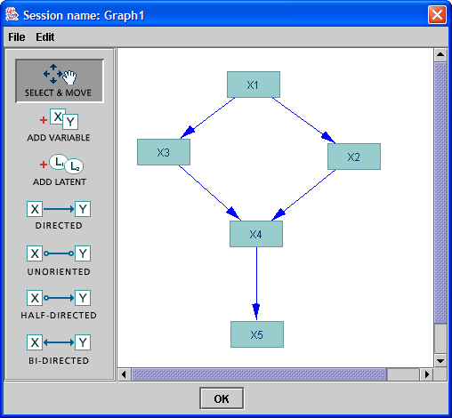
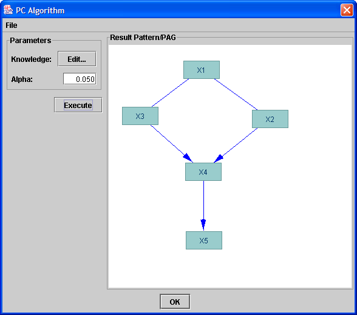
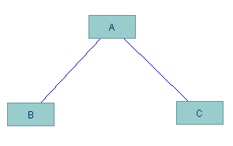

The PC algorithm is designed to search for causal explanations of
observational or mixed observational and experimental data in which it
may be assumed that the true causal hypothesis is acyclic and there is
no hidden common cause between any two variables in the dataset. (It
is also assumed that no relationship between variables in the data is
deterministic--see PCD).
The algorithm operates by asking a conditional independence oracle
to make judgements about the independence of pairs of variables (e.g.,
X, Z) conditional on sets of variables (e.g., {Y}). Conditional
indepedence tests are available for datasets that consist either
entirely of continuous variables or entirely of discrete variables;
hence, datasets of these types can be used as input to the
algorithm. As a way of getting one's head around how the algorithm
should behave in the ideal, when independence tests always give
correct answers, one may also use a DAG as an input to the algorithm,
in which case graphical d-separation will be substituted for an actual
independence test.
In the case where a continuous dataset is used as input, the
available conditional independence tests assume that the direct causal
influence of any variable on any other is linear and that the
distribution of each variable is Normal.
Some of the above assumptions are not
testable using observational data. They should come from prior
knowledge or partial experiments.
Pseudocode for the version of PC implemented in Tetrad IV is given
below. As shown in the pseudocode, the algorithm can be broken into
two phases: an adjacency phase and an orientation phase. In the
adjacency phase, a complete undirected graph over the variables is
initially constructed and then edges X---Y are removed if some set S
among either the adjacents of X or the adjacents of Y can be found (of
a certain size, or "depth") such that I(X, Y | S). Once the
adjacency structure over V has been well estimated by this procedure,
an orientation phase is begun. The first step of the orientation phase
is to examine unshielded triples and consider whether to orient them
as colliderDiscovery. An unshielded triple is a triple <X, Y, Z> where X
is adjacent to Y, Y is adjacent to Z, but X is not adjacent to
Z. Since X is not adjacent to Z, the edge X---Z must have been removed
during the adjacency search by conditioning on some set Sxz; <X, Y,
Z> is oriented as a collider X-->Y<--Z just in case Y is not
in this Sxz. Once all such unshielded triples have been oriented as
colliderDiscovery by this rule that can be, a series of orientation rules is
applied (in this case, the complete orientation rule set from Meek
1995) to orient any edges whose orientations are implied by previous
orientations. The log of particular decisions the algorithm makes, as
described above, when searching on an actual dataset is available
through the Logging menu in the interface.
Entering PC parameters
Consider the following "true" causal hypothesis (a
DAG):

When the PC algorithm is chosen from the Search dropdown, window
appears in which on may enter an depErrorsAlpha value and edit
knowledge. The depErrorsAlpha value is the significance level of the
statistical test used as a conditional independence oracle for the
algorithm. The default value is 0.05, although it is useful to
experiment with different depErrorsAlpha levels to test the sensitivity of the
analysis to this parameter. (Typical values for experimenting are
0.01, 0.05, and 0.10.)
PC is sensitive to background knowledge--that is, sensitive to
specifications that certain edges are either required in the model or
forbidden to be in the model. To edit this information, click the edit
button for background knowledge and enter the information in that
interface.
When parameters are set to their desired values, click
"Execute" to run the algorithm. The output will be a pattern
like the following:

Interpreting the
output
The are basically two types of edges that can
appear in PC output:
- a directed edge:

In this case, the PC algorithm deduced
that A is a direct cause of B, i.e., the causal effect goes from A to B
and it is not intermediated by any of the other observed variable
- a undirected edge:

In this case, the PC algorithm cannot tell
if A causes B or if B causes A.
The absence of an edge between any pair of
nodes means they are independent, or that the causal effect of one modelNode
in the other is intermediate by other observed variables.
Sometimes a double directed edge sometimes
appear in a PC search output. Such edges are the result of a
partial failure of the PC search. They may appear due to failure of
assumptions (e.g., relationships are non-linear, the population graph
is cyclic, etc.) or because the sample is not large enough and some
statistical decisions are inconsistent. In a situation like that, the
user may introduce prior knowledge to constraint the direction such
edge may assume, collect more data or use a different
algorithm. Knowledge of the domain will be essential.
Finally, a triplet of nodes may assume the following pattern:

In other words, in such patterns, A and B are connected by an
undirected edge, A and C are connected by an undirected edge, and B and
C are not connected by an edge. By the PC search assumptions, this
means that B and C cannot both be cause of A. The three possible
scenarios are:
- A is a common cause of B and C
- B is a direct cause of A, and A is a direct cause of C
- C is a direct cause of A, and A is a direct cause of B
In our example, some edges were compelled to be directed: X2 and X3
are causes of X4, and X4 is a cause of X5. However, we cannot tell much
about the triplet (X1, X2, X3), but we know that X2 and X3 cannot both
be causes of X1.
Pseudocode for PC
The following is pseudocode representing the way PC is implemented in Tetrad.
Step A:
Form the complete undirected graph G over v1,...,vn.
Step B (Fast Adjacency Search):
For each depth d = 0, 1, ...:
For for each variable x:
"next_y":
For each adjacent modelNode y to v:
Let adjX = adj(x) - {y}
Let adjY = adj(y) - {x}
For each subset Sx of adjX up to size d:
If x _||_ y | Sx, remove x---y from G.
Continue "next_y."
For each subset Sy of adjY up to size d:
if x _||_ y | Sy, remove x---y from G.
Continue "next_y."
Step C:
Orient colliderDiscovery in G, as follows:
For each modelNode x:
For each pair of nodes y, z adjacent to x:
If y and z are not adjacent:
If ~(y _||_ z | x):
Orient y-->x<--z as a collider.
Step D:
Apply orientation rules until no more orientations are possible.
Rules to use: away from collider, away from cycle, kite1, kite2.
(These are Meek's rules R1, R2, R3, and R4.)
Away from collider:
For each modelNode a:
For each b, c in adj(a):
If b-->a---c:
Orient b-->a-->c.
Else if c-->a---b:
Orient c-->a-->b.
Away from cycle:
For each modelNode a:
For b, c in adj(a):
If a-->b-->c and a---c:
Orient a-->c.
Else if c-->b-->a and c---a:
Orient c-->a.
Kite 1:
For each modelNode a:
For each nodes b, c, d in adj(a) such that a---b, a---c,
a---d, and !(c---d):
If c-->b and d-->b:
Orient a-->b.
Kite 2:
For each modelNode a:
For each nodes b, c, d in adj(a) such that a---b, a---d,
b is not adjacent to d, and either a---c, a-->c, or c-->a,
If b-->c and c-->d:
Orient a-->d.
Else if d-->c and c-->b:
Orient a-->b.
References:
Spirtes, Glymour, and Scheines (2000). Causation, Prediction, and Search.
Chris Meek (1995), "Causal inference and causal explanation with background knowledge."